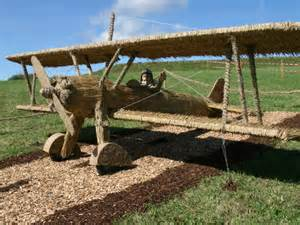

Neues Flugzeug
Wir haben unseren Vorrat an Flugzeugen aufgestockt, uns steht nun ein brandneuer Jumbo-jet zur Verfügung!

Wir haben unseren Vorrat an Flugzeugen aufgestockt, uns steht nun ein brandneuer Jumbo-jet zur Verfügung!
Da wir in der Welt immer populärer werden haben wir uns dazu entschlossen eine neue Landebahn zu bauen. Die Bauarbeiten beginnen am:
Wir wollen also innerhalb von 32 Tagen beginnen. Wir freuen uns bereits darauf dem Ansturm nachzukommen.
Wir haben uns ein Altes Flugzeug aus der Steinzeit zugelegt, wir werden kleine Rundflüge damit unternehmen, wer Interresse hat kann sich melden.(Wir übernehmen keine Haftung für den Verlust jeglicher Leben)
Wir haben, um das Warten auf den Flug angenehmer zu gestalten, unsere Wartehallen sowohl mit Massage-Stühlen, als auch mit einigen Spielereien ausgestattet.

Wir haben jetzt eine brandneue Imbissbude in unserem Flughafen. Feinste Spezialitäten (für den richtigen Preis versteht sich) werden dort angeboten, jetzt haben sogar die Schleckermäule einen Anreiz in den Flughafen zu kommen.